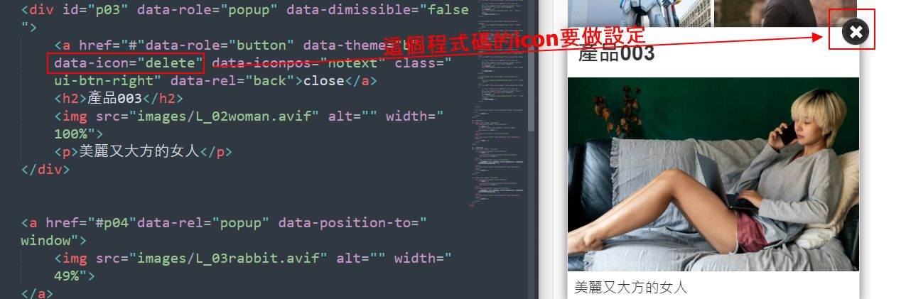
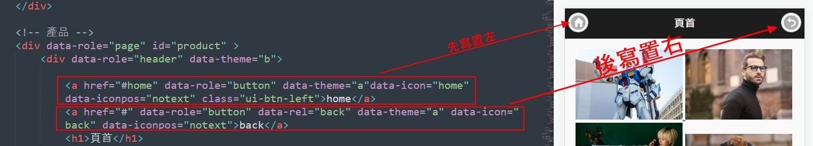
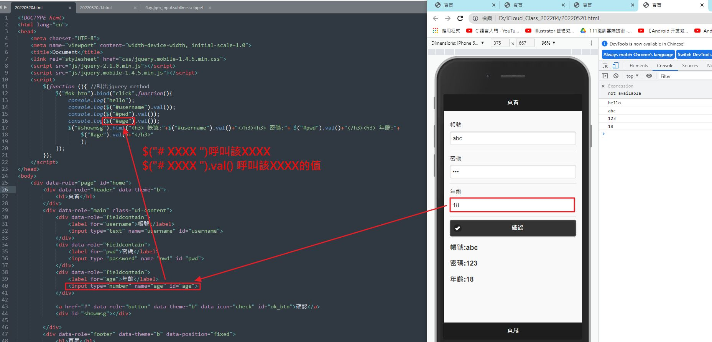
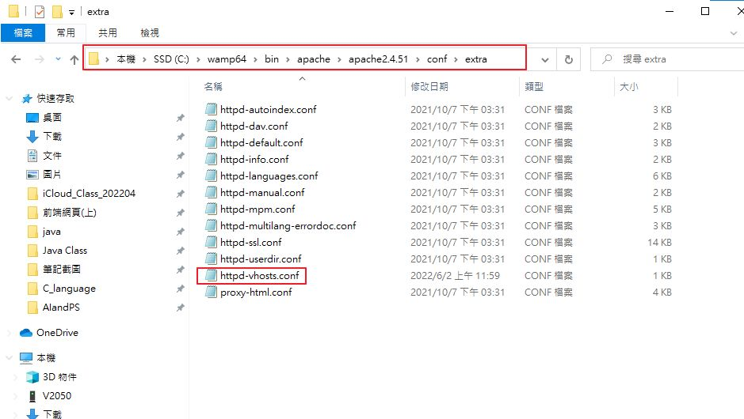
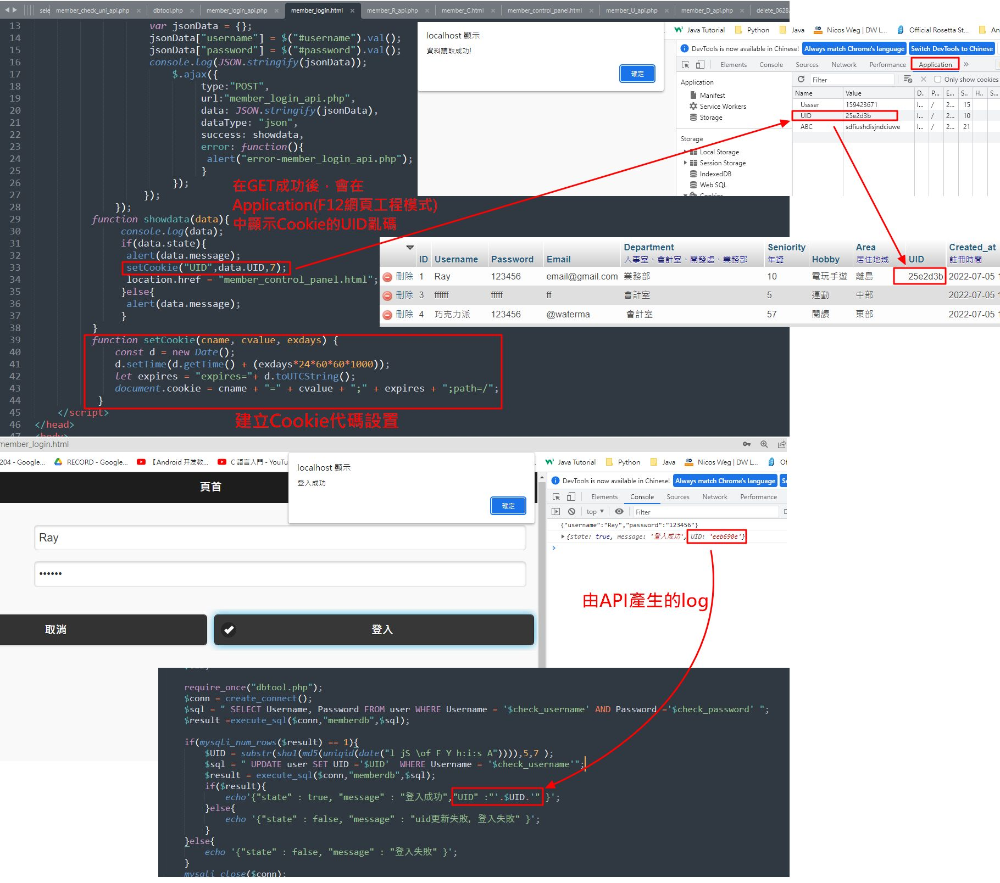

IP位址
如何搜尋IP位址資訊
Search→cmd如何搜尋DNS位址資訊
Search→cmd如何傳訊package 確認網路正常?
search→dmc閘道(gateway) 是什麼?
一般指的就是數據機。Physical Address(實體位址)是什麼?
每一塊網路卡都有獨一無二的號碼，屬於16進位制。因為16進位包含的數量很大，所以可以用來為全世界的網路卡表上號碼，可供追查。如何關掉防火牆?
"search→firewall如何下載Install Package Control
如何安裝Emmet
What is Emmet?
html 語法套件，不用一字一字打，直接快速插入語法如何查看在Sublime是否安裝了插件?
一開始寫html要打的程式語法
(html) 換行
<br>(html) 空格換下一行
<p></p>(html) 標題字體由大至小
<h1></h1> ~ <h6></h6>假文產生器 English and Chinese
中文假文產生器
"clorem100 (←需要的字數)+ Alt + C (簡體)英文假文生產器
"lorem100 (←想要的字數) + Tab"(html) 加入圖片及圖片大小 語法
架一個http檔案伺服器供資料抓取
"hfs(html)超連結語法
"a + Tab插入圖片注意事項
"要一律輸入"/" 並且不用加上磁碟的路徑(G:\)jQuery mobile教學網頁
jQuery Mobile的版本要Match Jquery 要找哪裡確認?
如何下載Jqeury 程式碼?
css 和 js 分別放什麼的程式碼?
如何裝快速輸入檔名套件?
寫手機網頁，如何寫上現成jQuery 和 jQuery Mobile程式碼?
(html)標籤區塊
<div></div>手機網頁架構寫法(頭中尾)
(html) div page 標籤
"<div data-role="page"></div>"(html) div header 標籤
"<div data-role="header"></div>"(html) div content 標籤
"<div role="main" class="ui-content"></div>"(html) div footer 標籤
"<div data-role="footer"></div>"(html) div 改背景顏色參數
"data-theme="b"(html) div 固定位置參數
"data-position="fixed""如何選不同的jdk8作業系統?
如何安裝jcreator(java開發工具)?
(html) 每個page寫上什麼代表整頁?
如何設定一段常用的程式碼，成為template?
(html)如何找到存檔好的程式碼template?
(html)貼上設定好的程式碼，如何查看設定時的注意字串?
(html)如何設定頁面全螢幕顯示?
(html)如何設定換頁效果? 又有哪些?
(html) viewport 是什麼意思?
(html)連結該頁id，該如何寫?
(html)如何多重選取一次同時寫兩行以上?
(html)如何下註解?
(html)如何對齊?
(html)小圖示例如關閉、首頁、上一頁之類的，要如何設定?
(html)頁首或頁尾的導覽等分切割連結如何寫?
(html)換頁效果怎麼寫?
(html)按鈕怎麼寫?
(html)訊息跳出如何寫?
(html)使用圖示如何寫?
(html)超連結button沒有字如何寫?
(html)button置左或右怎麼寫
(html)上方返回和首頁鍵先寫後寫有什麼差別?
(html)如何寫點圖片跳出說明的語法?
(html)如何置中跳出來的視窗? popup
(html)如何讓使用者只能點叉叉關閉?
(html)如何設置button有返回功能?
(html)圖示關閉即可，語法中close為什麼要留著?
手機底下導航的語法是什麼?
手機底下導航button不做任何語法設定，最多可以排多少個?

手機底下導航button不做任何語法設定，幾個以上會自動變2排?

手機底下導航button如果要分格子，要如何寫，最多可以切幾刀?

如何讓手機底部導航button加上相對小圖示?

如何改變手機底部導航button小圖示的位置?

如何讓手機底部下的選單亮著，令使用者知道當前停留在哪個頁面?

button的四種寫法，哪兩種最常用?

button語法的垂直排列 和 橫向排列 如何寫?

如何寫出要「已售完」鎖住的button?

如何快速寫出 程式中包程式 並且 一次寫好幾個?

列清單(listview)時，標上編號?

如何寫出垂直清單(多用於新聞排列)?

括號內外有雙引號，電腦難以判讀

清單邊角縮排且圓弧設定如何寫?

如何寫出搜索欄?

如何在搜索欄寫上「搜索提示」?

如何寫出氣泡數字?

如何插入javascript e.g.跳出警告視窗?

建立Listview如何讓同一欄List裡的超連結分成左右兩區?

Button橫向排列語法 和 Button被放入格子內的語法 差別在哪裡
Button 被放入格內的語法怎麼寫?

建立Listview如何讓同一欄List裡的超連結分成左右兩區(實例)?

超連結另開分頁如何寫?

如何自訂icon?

如何另開google地址分頁?

公開平台資料要下載什麼類型的檔案?

chrome的json檔附加軟件要如何下載?

直接點擊打電話如何寫?

listview清單中的一欄圖片尺寸要多少比較好?

如何下在fakeimg套件?

顏色16進制的算法?

listview清單中的欄位(圖片、標題、說明)寫法?

listview中再分類副標題該如何做?


折疊式選單如何寫?

折疊式選單其中一欄打開，其他關閉該如何寫?

什麼RWD?

做RWD頁面的前置作業，該如何將css檔放置何處?

RWD JqueryMobile Demo 網頁


RWD的三種平台尺寸
"手機


側拉選單Demo網頁

RWD 要寫上什麼語法才能夠變換平台尺寸?
RWD 放大視窗尺寸時，該寫什麼圖片才會成為背景?
只要什麼字符出現，就是叫出javascript?

如何寫出側拉選單?
寫滑動側拉選單前，要在head貼上什麼語法? 並且其大概是什麼意思?
側拉選單的出現方式如何改?
側拉選單從右或左出現如何改?
側拉選單如何寫?
手滑側拉選單，script語法要改哪裡?
如何寫自訂圖示CSS語法?
(CSS)自製圖示要注意什麼?
快速輸入class語法
如何監聽input的值，並在網頁工程模式顯現?
輸入type為number的input
其它類型的input有哪些?
如何在script中寫上監聽後按下button，下方會顯示資訊並「換行」?
如何在script中監聽語法中加大字體、加字、換行?
如何在script中呼叫div的#id後，套用html的語法?
如何寫script中呼叫#id的div內容?
script如何即時監聽input的內容?
script如何即時監聽input的字數長度?
如何在帳號、密碼、年齡input欄內提示輸入內容?
script如何寫出即時監聽input內容，並在下即時顯示正確與否?
script 如何寫出年齡限制?
script如何寫所有input欄位資訊正確就顯示於下方(=傳到雲端)?
一次在同一行(div)裡面，寫兩個不同標籤
如何打備註? textarea
date日曆圖欄位的寫法?
如何寫滑桿?
不用寫==true，就默認true了
身高體重計算BMI怎麼寫?
如何做調色盤改變整個div背景顏色?
畫box 、畫圓、調整陰影
如何寫slider(以商品上下架為例)
如何寫select選項?
如何寫check box 用陣列執行顯示於下方?
下方資訊欄若錯誤，該如何清空?
radio button的寫法
如何改Wamp中的host，讓其他人可以連到你的網頁?
Jason檔案格式

如何抓open data jason檔的資料
如何帶入opendata的json檔資料，做成listveiw (先做name)?
如何帶入opendata的json檔資料，做成listveiw (補上其他資訊)?
如何控制文字顯示在一定字數內?
如何在店家名稱後加上可否信用卡付款?
如何用css設定字體大小、顏色?
如何寫超連結到google地圖，並另開新分頁?
如何在mysqal 內建立資料庫和資料表?
(SELECT)寫php語法連結Server伺服器後，從資料庫中取得資料
如何寫php僅連線到伺服器?

後端php執行sql語法抓取資料庫的概念圖
寫php轉json後，如何改編碼，顯示中文?
如何新增建檔時間timestamp?
如何新增資料至資料庫(mysql)，然後顯示到html頁面?
如何用php抓取mysql資料到html檔，做成listview?
如何寫從前端在欄位輸入資料後，傳送至後端資料庫，並告知傳送成功與否?
如何使用postman測試資料模擬從前端傳入後端?
如何將前端資料以JSON格式(字串轉陣列)傳到後端?
如何寫後端程式API 限制輸入欄位內容，不隨便接收不符欄位格式的資料?
php mysql 更新資料寫法
php mysqli Delete API 刪除寫法
前端如何畫table
寫完Table，如何寫前端接後端Delete.php( API) + 彈出刪除確認警告視窗
寫完Table，如何寫前端接後端Update.php( API)
寫註冊會員 api 連線($conn)語法重複的簡潔寫法 用"or"

如何寫 帳號重複註冊 api (php)?
如何寫登入成功api?
(desc/asc)如何寫登入成功後，進入後台資料讀取排列顯示於前端table的api?

如何產亂數，用於製作UID碼?
如何設置cookie?
如何在登入(login)的API中寫入產生UID的亂碼?
如在login前端寫下登入成功後，會自動在F12工程模式中的Cookie中顯示UID亂碼?
如何寫API 比對資料庫是否有UID存在，讓使用者進入前端後台?

如何在header顯示登入的使用者名稱?
如何多增加一個會員等級欄位?
如何寫更新會員等級的欄位，並傳入後端?
如何寫判斷登入者的會員等級?

OK旅館範例+json資料重新排序 推演算法
OK旅館範例+資料結構渲染(split + a超連結埋下換頁變數)
forEach 用法 (jquery)